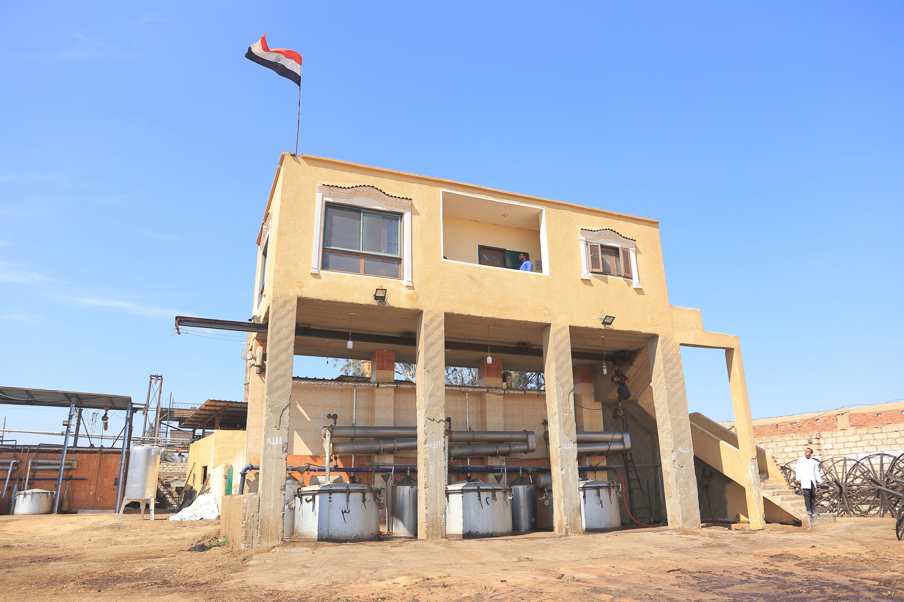
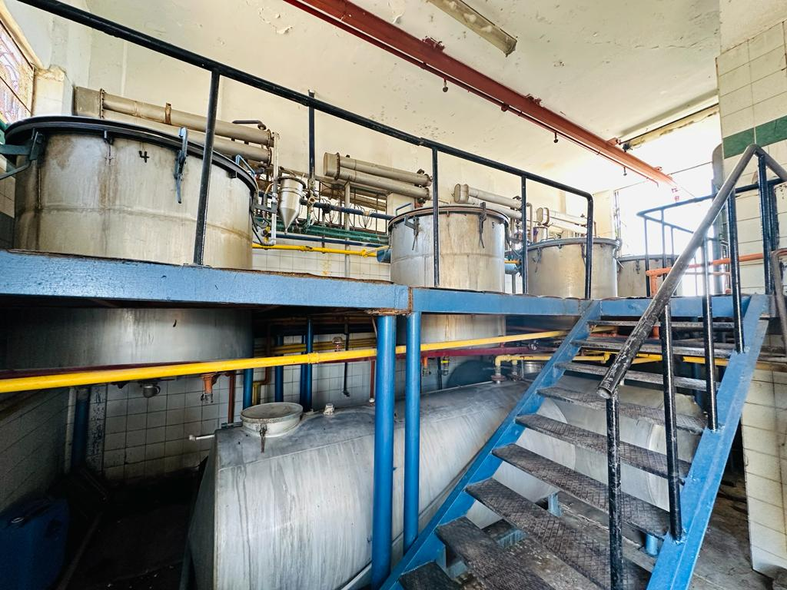
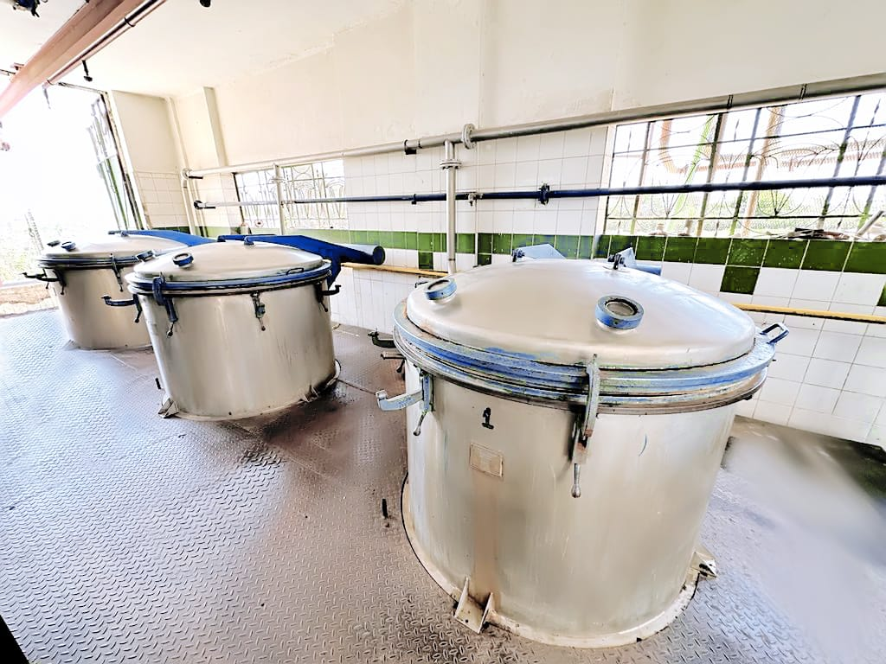
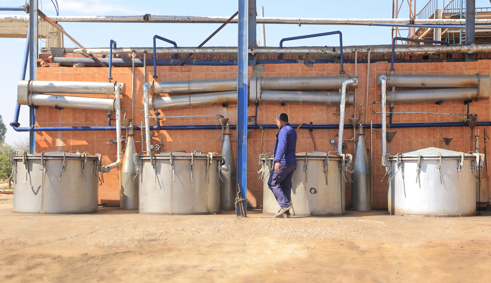
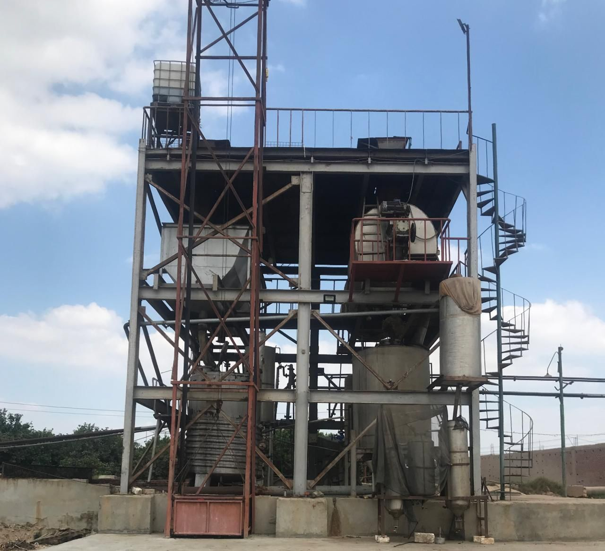
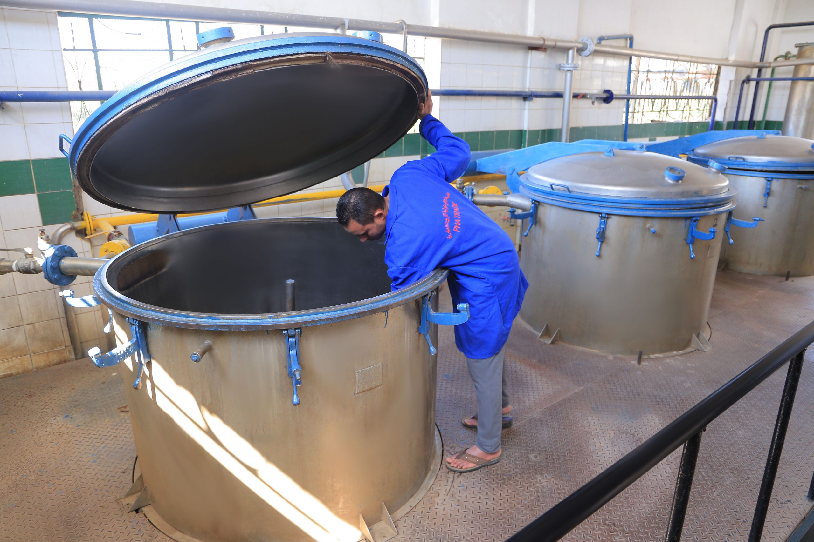

Our Facilities
Two strategically located sites in Egypt, combining head-office operations, advanced manufacturing, a dedicated QC laboratory, and our own farm, give PHATRADE full control from cultivation through to shipment.
Two Sites, One Supply Chain
PHATRADE operates two integrated facilities in Egypt, each with a distinct role in delivering traceable, high-quality aromatic ingredients from farm to shipment.
Obour City
Head Office & QC Laboratory
- Function
- Head Office, Manufacturing, QC Lab, R&D, Packing & Shipping
- Address
- 3 Street 194, Western Extension, Industrial Zone, Obour City 11181, Cairo
- Cairo Airport
- ~15 minutes by road
Sadat City
Factory & Farm
- Function
- Extraction factory, cultivation farm, distillation & processing
- Address
- Km 15, Sadat City–Kafr Dawood Road, Al-Beheira Governorate, Egypt
- Distance from Cairo
- 94 km north-west

- Obour City
- Head Office, QC Lab & Manufacturing, approximately 30 km NE of Cairo
- Sadat City
- Factory & Farm, 94 km NW of Cairo
- Cairo Airport
- ~15 min from Obour City
Facilities at a Glance
A Closer Look



Obour City
PHATRADE's principal site in Obour City houses all corporate functions alongside state-of-the-art production, quality control, and logistics operations under one roof, conveniently located just 15 minutes by road from Cairo International Airport.
3 Street 194, Western Extension, Industrial Zone, Obour City 11181, Cairo, Egypt-
Head Office
Corporate administration and management functions
-
Manufacturing
Primary production facility for essential oil processing and blending
-
Quality Control Laboratory
Dedicated QC lab with three GC units for full batch analysis and retained sample management
-
Research & Development
On-site R&D centre developing new extraction methods and product formulations
-
Packing & Shipping
Full packing and export-shipment operations, with direct access to Cairo International Airport, approximately 15 minutes away



Sadat City
Situated 94 km north-west of Cairo in Al-Beheira Governorate, the Sadat City site combines an integrated extraction factory with PHATRADE's own cultivation farm, enabling complete farm-to-ingredient traceability from a single location.
Km 15, Sadat City, Kafr Dawood Road, Al-Beheira Governorate, Egypt


Our Farm
PHATRADE's own farm at the Sadat City site gives us direct control over raw-material quality and traceability from the moment of planting. We grow four key aromatic crops, harvested at peak fragrance intensity and processed on the same site.
-
Bitter Orange Flowers
Citrus aurantium
Hand-harvested blossoms used to produce Neroli essential oil and Orange Flower Concrete, prized in fine fragrance and luxury cosmetics for their rich, honeyed floral character.
Neroli Essential Oil Orange Flower Concrete -
Geranium
Pelargonium graveolens
Steam-distilled leaves and stems yield a balanced rose-like oil widely used in personal care, aromatherapy, and as a supporting note in fine fragrances.
Geranium Essential Oil Geranium Concrete -
Basil
Ocimum basilicum
Egyptian-grown Grand Vert basil is harvested at full bloom and processed into both essential oil and concrete, valued in flavor applications and herbal fragrance compositions.
Basil Essential Oil Basil Grand Vert Concrete -
Violet
Viola odorata
Delicate violet flowers and leaves are solvent-extracted to produce Violet Concrete and Absolute, among the most sought-after materials in luxury and niche fragrance creation.
Violet Concrete Violet Absolute